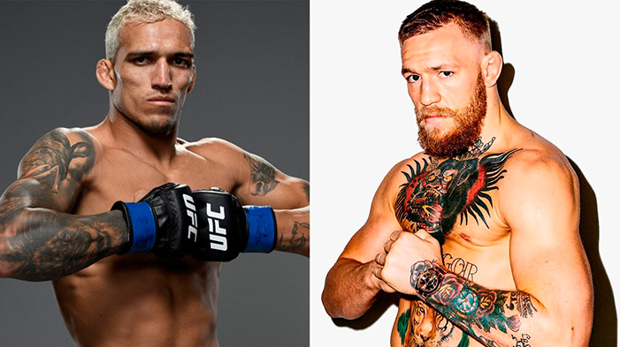

Arthur Muniz
19 de Abril de 2022
A vitória de Charles Do Bronx contra Dustin Poirier no UFC 269, mantendo o cinturão da categoria dos peso-leve, chamou a atenção de muitos, principalmente de um dos lutadores mais bem pagos do UFC, o notório Conor McGregor, que desafiou Charles com a seguinte frase: “Então, em que data eu luto com [Charles] Oliveira?”, que também publicou sobre um segundo confronto entre Irlanda e Brasil, em referência à vitória sobre José Aldo em 2015, quando unificou o cinturão dos penas ao nocautear o brasileiro.
Em resposta, Charles Do Bronx foi contundente, aceitou o desafio e ainda se colocou à disposição para lutar no mesmo final de semana, no UFC Vegas 45, que aconteceu em 18 de dezembro, “O que você acha desse fim de semana? Estou pronto, ainda estou na cidade e há um evento chegando. Vamos nessa”, publicou o brasileiro, mas uma eventual luta entre Do Bronx e McGregor não sairia tão cedo. O irlandês ainda se recupera de lesão na perna esquerda sofrida em agosto em duelo, contra o próprio Poirier. Por outro lado, o brasileiro ainda pode receber uma suspensão médica após sua última luta.
No UFC desde 2010, Charles do Bronx se tornou campeão dos leves em maio de 2021, quando venceu Michael Chandler em luta pelo cinturão, que estava vago após a aposentadoria do então campeão Khabib Nurmagomedov. A vitória sobre Poirier foi a primeira defesa de título do brasileiro